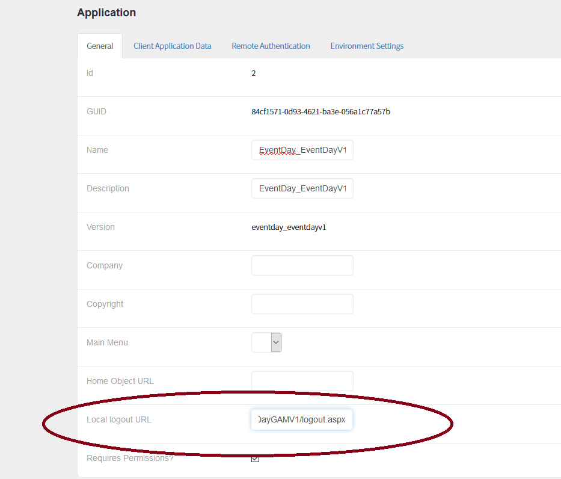

The GAM Application logout object is configured using the GAM Web Backoffice under the Application's configuration (or programmatically, using the GAM API). Its purpose is to determine the URL of the object to be redirected after executing the Logout in SSO applications.  Since GeneXus 15 upgrade 5, the URL can be absolute or relative depending on the UseAbsoluteUrlByEnvironment property value.
|
| Backlinks |
| Logout options for Single Sign On using GAM |